This page brings together basic information about the Lao script and its use for the Lao language. It aims to provide a brief, descriptive summary of the modern, printed orthography and typographic features, and to advise how to write Lao using Unicode.
The Lao language has around 4,000,000 speakers. The Lao script is used for writing the Lao language, and is also the official script of a number of minority languages in Laos. There is a considerable Lao-speaking population in Thailand who write their language with the Thai script.
ອັກສອນລາວʔáksɔ̌ːn láːw
The Lao alphabet was adapted from the Khmer script, and is a sister system to the Thai script, with which it shares many similarities and roots. However, Lao has fewer characters and is formed in a more curvilinear fashion than Thai. Further distancing from the Thai script occurred via a number of reforms. In 1975, the latest spelling reform simplified and standardised the script.
The script was originally an abugida, but since the script reforms leading up to 1960 it has been alphabetic. When the communist Pathet Lao overthrew the Lao government in 1975, they implemented a final spelling reform which simplified and standardized the script.
Lao is an alphabet. This means that both consonants and vowels are indicated. See the table to the right for a brief overview of features for the modern Lao orthography.
Lao text runs left to right in horizontal lines. Spaces separate phrases, rather than words. There is no case distinction.
Lao has 26 consonants. Each onset consonant is associated with a high, mid, or low class related to tone. Tone is indicated by a combination of the consonant class, the syllable type (checked/unchecked), plus any tone mark.
No conjuncts are used for consonant clusters, except for one subjoined consonant, used in combination only with HA.
Vowels in Lao are written with a mixture of combining characters and ordinary spacing characters. Lao uses visual placement: only the 8 vowel components that appear above or below the consonant are combining marks; the others are ordinary spacing characters that are typed in the order seen. There are 5 pre-base letters. In principle, there are no single-character circumgraphs in Lao text, but a single vowel or diphthong is frequently made up of multiple components.
This page lists 28 multipart vowels (made from 12 vowel signs, and 2 consonants). Multipart vowels can involve up to 4 glyphs, and glyphs can surround the base consonant(s) on up to 3 sides.
Vowels are often written differently when they appear in a closed vs. open syllable.
Click on the sounds to reveal locations in this document where they are mentioned.
Phones in a lighter colour are non-native or allophones.
Vowel sounds
Plain vowels
Complex vowels
iə̯iːə̯iwiːw
ɯə̯ɯːə̯
uə̯uːə̯
ɤːj
ɛwɛːw
ajaːjaw
Consonant sounds
Initials
labial
dental
alveolar
post-
alveolar
palatal
velar
glottal
stops
pb
td
k
ʔ
aspirated
pʰ
tʰ
kʰ
affricates
t͡ɕ
fricatives
f
s
x
h
nasals
m
n
ɲ
ŋ
approximants
ʋ/w
l
j
trills/flaps
r
Finals
labial
dental
alveolar
post-
alveolar
palatal
velar
glottal
stop
p
t
k
ʔ
nasal
m
n
ŋ
approximant
w
j
Tone
Lao has 6 phonological tones in unchecked syllables, and 4 in checked syllables.
Name
Vowel
Final
Unchecked?
Checked?
Rising
˨˦ or ˨˩˦
ě
✓
High
˦
é
✓
✓
High falling
˥˧
ê
✓
Mid
˧
ē
✓
✓
Low
˩
è
✓
✓
Low falling
˧˩
e᷆
✓
✓
The tone depends on the class of the initial consonant in a syllable, the structure of the syllable, and whether or not a tone mark is applied to override the default.
Tone values vary depending on location in Laos. There is some disagreement about whether there are 5 or 6 tones in Vientiane, and the tables below show that different sources disagree on the tones produced. According to some, most dialects of Lao and Isan have six tones, those of Luang Prabang have five.wl
More details about tone values
The following tables present different descriptions of tone values in Lao for the Vientiane dialect. The first and third tables basically agree on the tone value, although the names of tones vary. The middle table shows some different tone values altogether. See a list of studies for Vientiane tones.
This diagram shows 5 tones with names corresponding to a mixture of the first two tables below.
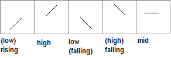
Tone marks are normally used only on open syllables, and modify the default tone value. Two of the four tone marks are only used with Class 1 consonants. Tone marks tend to be placed directly over the consonant (or superscript vowel), unlike Thai which tends to place them slightly to the right.
Open or live syllables are those that end with a long vowel or sonorant (eg. ງນມຍວ). Closed or dead syllables end with a stop consonant (eg. ກດບ) or short vowel.
The Simmala chart appears a little suspect, since they say in the text that the rising tone doesn't occur in dead syllables, and yet the book has examples of dead syllables with long vowels with a low tone.
Structure
The syllable is a basic element of the Lao language, and many words are monosyllabic. All syllables begin with a written consonant. Syllables that begin with a vowel sound are written with a silent base consonant.
The phonological structure of a syllable is (C)w?V(C).
Unlike Thai, its close neighbour linguistically, Lao doesn't naturally support onset clusters of consonants other than with ʷ, and then not before rounded vowels.wl,#Syllables Onset consonants followed by labialisation include: tʷʰ tɕʷ kʷ kʷʰ ʔʷ sʷ ŋʷ lʷ.
Only a small set of consonants occur at the end of a syllable. ʔ occurs after short vowels.
Lao also has 6 phonological tones in unchecked syllables (ie. ending in a vowel, or m, n, ŋ, w or j), and 4 in checked syllables (ie. ending in p, t, k, or ʔ).
Vowels
Vowel summary table
The following table summarises the main vowel to character assigments.
The diphthongs section below contains one character that incorporates a final nasal. The list doesn't include those combinations that involve simply appending a glide after the vowel (see compositeV). Standalone vowels use the character shown as a base for the normal vowel symbols. ◌ indicates the location of consonants, but doesn't necessarily indicate the presence of a combining mark.
ກະ
kaU+0E81 LAO LETTER KO + U+0EB0 LAO VOWEL SIGN A
The short vowel a has to be written explicitly, using 0EB0 in open syllables, and 0EB1 in closed syllables. The following word shows examples of both.
ລະດັບ
When used in conjunction with other vowels, 0EB0 and 0EB1 are also used to indicate short vowels for open and closed syllables, respectively. In phonetic transcriptions, shortened open vowels often end with a glottal stop. For example, compare:
ກິ
kiU+0E81 LAO LETTER KO + U+0EB4 LAO VOWEL SIGN I
Lao uses the following combining marks for vowels.
◌ິ␣◌ີ␣◌ຶ␣◌ື␣◌ຸ␣◌ູ␣◌ົ␣◌ໍ␣◌ັ
None of the marks are spacing combinining marks; the spacing vowels are all written as letters.
The glyphs used to represent vowels, whether alone or in multipart vowels, are arranged around a syllable onset, which is rare in Lao but may include 2 consonants, rather than just around the immediately preceding consonant. For an example of the effect this produces, see prebase and compositeV.
Vowel letters
Dedicated vowel letters
ກາ
kaːU+0E81 LAO LETTER KO + U+0EB2 LAO VOWEL SIGN AA
The following vowel-specific characters are ordinary spacing characters, with the general category of 'letter'. Many of these are typed and stored before the base consonant (see prebase). The dotted circles indicate the location of the syllable-initial consonant.
ເ◌␣ແ◌␣ໂ◌␣◌ະ␣◌າ␣ ␣◌ຳ␣ໄ◌␣ໃ◌
0EB3 is classed as a vowel, but also contains the final consonant m, represented by a built-in nikhahit (cf. 0ECD). It is a spacing combining character, but the Unicode Standard classifies it as a letter.
Consonants used for vowel sounds
ກວ
kuːəU+0E81 LAO LETTER KO + U+0EA7 LAO LETTER WO
The following consonant characters are also used to create vowel sounds, either alone or as part of a multipart vowel.
ອ␣ວ␣ຍ␣ຽ
On its own, in the middle of a closed syllable, 0EAD is pronounced as the vowel -ɔː- and 0EA7 is pronounced -uːə̯-, eg.
ຈອກ
ບວມ
0EAD is also used as a vowel carrier for standalone vowels (see standalone).
0EA7, 0E8D, and 0EBD also represent the glide -w or -j at the end of a diphthong (see compositeV).
0EBD was originally an alternate form of non-initial 0E8D, but is now used for diphthongs, either alone as iːə̯ or as the semi-vowel j, eg.
ປຽກ
ຊາຽ
All of these characters also appear in the multipart vowels described next.
Multipart vowels
ເກຶອ
kuːəU+0EC0 VOWEL SIGN E + U+0E81 LETTER KO + U+0EB6 VOWEL SIGN Y + U+0EAD LETTER O
In the lists below, hyphens represent consonants. Vowels used in closed syllables are indicated by a trailing hyphen in the IPA transcription.
Lao has many vowel sounds that are represented by more than one character. Multipart vowels can involve up to 4 glyphs, and glyphs can surround the base consonant(s) on up to 3 sides.
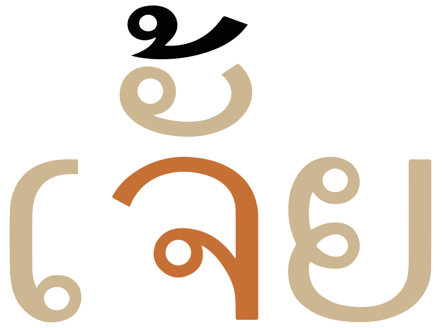
A multipart vowel comprised of a pre-base vowel letter, a vowel combining mark, and a post-base semivowel that is acting as part of the rhyme.show composition
ເຈັ້ຍ
Some multipart vowels represent plain vowel sounds:
ເ-ະ␣ເ-ັ␣ເ-ິ␣ເ-ີ␣ໂ-ະ␣ແ-ະ␣ແ-ັ␣ເ-າະ␣ັອ
The other multiparts represent diphthongs, which generally end in one of ə̯, i, or w.
In some cases, the spelling is straightforward because a semivowel simply follows a plain vowel.
ິວ␣ີວ␣ຽວ␣ເ-ີຽ␣ເ-ີຍ␣ແ-ວ␣ອຍ␣ັຍ␣າຍ␣າຽ␣າວ
For others, the spelling doesn't closely follow the sound represented.
ັຽ␣ເ-ັຍ␣ເ-ຍ␣ເ-ຶອ␣ເ-ືອ␣ັວ␣ົວະ␣ົວ␣ວາ␣ເ-ົາ
Observation: Simmala et al. list the multipart vowel ເ-ັຍະ for -ia in (only) one location, but I have yet to identify words containing this sequence, and suspect that it may be a typographic error.
Characters that don't appear in the combinations:
ຸ␣ູ␣ໃ␣ໄ␣ໍ␣ຳShow which combinations contain a given character:
The following list shows where vowel signs are positioned around a base consonant to produce vowels, and how many instances of that pattern there are. Numbers after + sign indicate multiple code points.
5 pre-base, eg. ໂກōk̯ (ko)
3 post-base, eg. ກາk̯ā
7 superscript, eg. ກິk̯i
2 subscript, eg. ກຸk̯u
1+6 sup+post-base, eg. ກັຍk̯äɲ̱ kaj
+3 post+post-base, eg. ກາຍk̯āɲ̱kaːj
+5 pre+post-base, eg. ເກະēk̯ake
+4 pre+superscript, eg. ເກິēk̯ikɤ
+1 super+post+post, eg. ກົວະk̯ow̱akuə
+1 pre+post+post, eg. ເກາະēk̯āakɔ
+4 pre+sup+post-base, eg. ເກົາēk̯oākaw
+2 pre+sup+post+post-base, eg. ເກັຍະēk̯äɲ̱akia
At maximum, vowel components can occur concurrently on 3 sides of the base.
Distribution of vowel elements is as follows:
-ັ -ິ -ີ -ຶ -ື -ໍ -ົ
-ຳ
ເ ແ ໂ ໃ ໄ
ະ າ ອ ວ ຍ ຽ
ຍ ຽ ະ ວ
-ຸ -ູ
Standalone vowels
ອ
Lao uses a silent ອ [U+0EAD LAO LETTER O] as a base (although it is often transcribed as ʔ), to which vowel signs are applied, eg.
ໂອ
ອຸ່ນ
ຊາວເອັດ
Lao has no independent vowel letters, but when 0EAD is used as a vowel in a closed syllable it indicates the vowel ɔː.
ຈອກ
Pre-base vowel signs
ໂກ
koːU+0EC2 LAO VOWEL SIGN O + U+0E81 LAO LETTER KO
Five vowel signs appear to the left of the onset consonant. See an example in fig_prebase.
ເ␣ແ␣ໂ␣ ␣ໄ␣ໃ
Like Thai, Lao uses a visual encoding model, so these characters are not combining characters, and are typed and stored before the base. For example:
These vowel signs are placed before the start of the syllable onset. This means that in a word with more than one consonant at the start (such as for shifting the tone) the pre-base vowel is placed to the left of the syllable-initial consonant, rather than to the left of the consonant after which it is pronounced. Tone marks and post-base vowel signs are however attached to the latter. For the following examples, click on the Lao text to see the order of characters.
ໃຫຍ່ເຫຼືອງ
fig_prebase shows another example to graphically illustrate the relationships between the characters.
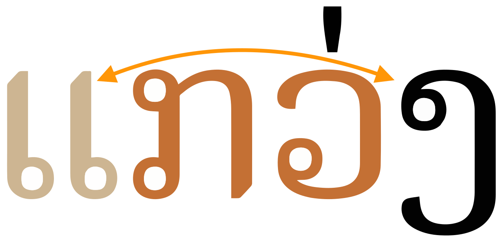
A vowel sign that appears 2 characters out of sequence from where it is pronounced, because the syllable onset is 2 characters long.show composition
ແກວ່ງ
Vowel length
In common with other languages, i, ɯ and u vowels have dedicated characters for long and short sounds. But many multipart vowels use 0EB0 (in open syllables) and 0EB1 (in closed syllables) as shorteners. The following provides one example of the general pattern.
ເ◌␣ເ◌ະ␣ເ◌ັ◌
This can be seen clearly by comparing the long and short vowels in vowel_mappings.
Tones
The Unicode Lao block provides the following characters for indicating tone.
່␣້␣໊␣໋
The tone is expressed using the class of the initial consonant in a syllable, the structure of the syllable, and whether or not a tone mark is applied to override the default.
Tone marks should be typed and stored in memory immediately after the base consonant of the syllable, or after a superscript vowel sign if there is one. However, the tone mark should be typed before ຳ [U+0EB3 LAO VOWEL SIGN AM], and should be displayed above the nikhahit, see fig_tone_am.
The following chart shows how to tell which tones are associated with a syllable. 'Checked' means ending in the sound -p, -t, or -k or a short vowel.
Mark
Checked?
Short/long
Consonant
Tone
่
high/mid
low
low
falling
้
high/mid
falling
low
high
๊
mid
high
๋
mid
rising
none
no
high
rising
mid/low
mid
yes
short
high/mid
low
low
high
long
high/mid
low
low
falling
Vowel absence
Because the orthography is alphabetic, rather than an abugida, vowel absence after syllable-final consonants does not normally need to be marked in any way. The absence of a vowel sound is simply indicated by the absence of a vowel sign.
Nor is vowel absence normally marked in syllable-initial clusters. The only conjunct forms in Lao are the subjoined l and the ligatures described in highclass.
໌
໌ [U+0ECC LAO CANCELLATION MARK was previously used to indicate silenced consonants, but is now described as obsolete.wl,#Punctuation
Vowel sounds to characters
This section maps Lao vowel sounds to common graphemes in the Lao orthography. The ◌ indicates the location of a consonant relative to the vowel sign; if there are 2 of these, the vowel is used only in closed syllables. Click on a grapheme to find other mentions on this page (links appear at the bottom of the page). Click on the character name to see examples and for detailed descriptions of the character(s) shown.
Sounds listed as 'infrequent' are allophones, or sounds used for foreign words, etc.
Whereas the table just above takes you from sounds to letters, the following simply lists the basic consonant letters.
Each of the basic consonants is associated with one of 3 classes (high, mid, and low), that play a part in indicating the tone of the syllable (see tones). In only a few cases, though, does this lead to more than one letter for a given consonant.
The pronunciation of a letter often differs when the consonant is the onset or coda of a syllable.
In the following lists, the class of each consonant is shown just below the IPA data. If a dash appears after the IPA transcription, it indicates the pronunciation in syllable-initial position; before indicates the pronunciation for syllable codas.
A silent ຫ[U+0EAB LAO LETTER HO SUNG] can be added before the onset characters listed just above to make their default tonal class high. (Note that this doesn't set a high tone, it just changes the class of the consonant, to which tone rules are then applied.)
ຫວ່າງ
Wiktionary lists most of the 2-letter spellings as dated when the following 3 alternatives could be used, instead.
ໝ␣ໜ␣ຫຼ
Two combinations can be represented as ligatures, for which there are separate characters in Unicode: 0EDD and 0EDCd,462, eg.
ໝາ
ໜອນ
A third can be represented by 0EAB 0EBCu,378, eg.
ຫຼາຍ
Letter O
0EAD represents a glottal stop or is silent when used as a base for vowels at the beginning of a syllable (see standalone).
ໂອ
When it appears after a base consonant in a closed syllable it becomes the vowel ɔː (see otherV).
ຈອກ
It is also used in combination with other characters to produce additional vowel sounds (see compositeV).
The r sound
One more letter was officially removed from the alphabet by the Ministry of Education, but it is still used occasionally to transliterate Indic or other foreign words into Lao, eg. ຝຣັ່ງflaŋforeigner It is generally used to represent the letter 'r': the sound r no longer exists in Lao.
ຣ
Onsets
Modern Lao really only has one audible, syllable-initial cluster, and that occurs when it labialises just over half a dozen initial consonants (see structure). In those cases, the initial consonant is simply followed by ວ, eg.
ກວ້າງ
Lao does, however, have clusters of written consonants at the syllable onset where ຫ is used to change the class of a following consonant, eg.
Lao doesn't have any special code points dedicated to syllable final consonants, although consonants do appear in those positions, eg. ນົກ
Only the following consonants appear in syllable-final position. Note how the sound may change: where there is more than one phonetic realisation, the one with a preceding hyphen is the final.
ກ␣ງ␣ຍ␣ດ␣ນ␣ບ␣ມ␣ຢ␣ຣ␣ວ
Because Lao requires vowels to be written, there is not the ambiguity about syllable boundaries that one finds in Thai (caused by ambiguity about whether a consonant is syllable-final or a syllable in its own right).
Phonetically, unlike Thai, Lao doesn't have syllable-initial consonant clusters other than those followed by w plus a non-rounded vowel (see structure). Those are written using an ordinary ວ [U+0EA7 LAO LETTER WO], eg.
ກວ້າງ
Otherwise, consonant letter clusters occur in the following circumstances:
Where a syllable ends with a consonant and another syllable begins. The Lao for Lao script has several syllable-final consonants: ອັກສອນລາວ
No special characters or viramas are involved, except those described in highclass.
0EBA is used as a virama when writing Pali. It is not used in modern Lao.
In a consonant cluster any tone marks or superscript vowels appear over the second consonant.
Consonant length
The Lao orthography has no special features for dealing with geminated or long consonant sounds.
Consonant sounds to characters
This section maps Lao consonant sounds to common graphemes in the Lao orthography.
The 3 columns show, left to right, high-class, mid-class, and low-class consonants, respectively.
Click on a grapheme to find other mentions on this page (links appear at the bottom of the page). Click on the character name to see examples and for detailed descriptions of the character(s) shown.
Onsets
pʰ-
ຜ
ເຜິ້ງ
ພ
ພູ
p-
ປ
ປາ
b-
ບ
ແບ້
tʰ-
ຖ
ຖົງ
ທ
tʰúŋ
t-
ຕ
ຕາ
t͡ɕ-
ຈ
ຈອກ
d-
ດ
ເດັກ
kʰ-
ຂ
ໄຂ່
ຄ
ແຄບ
k
ກ
ໄກ່
ʔ
ອ
ໂອ
f
ຝ
ຝົນ
ຟ
ໄຟ
s
ສ
ເສືອ
ຊ
ຊ້າງ
x
ຂ
ຄ
h
ຫ
ຫາງ
ຮ
ຮາກ
m
ໝ
ໝອກ
ຫມ
ຫມຶກ
ມ
ແມວ
n
ໜ
ໜຶ່ງ
ຫນ
ຫນອງ
ນ
ນົກ
ɲ
ຫຍ
ຫຍັງ
ຍ
ຍຸງ
ŋ
ຫງ
ງ
ງົວ
ʋ
ຫວ
ຫວ່າງ
ວ
ວີ
l
ຫຼ
ຫຼາຍ
ຫລ
ຫລິ້ນ
ລ
ລີງ
ຣUsed for non-native sounds in loan words.
ຣະຄັງ
j
ຢ
ຢາ
Finals
-p
ບ
ເລັບ
-t
ດ
ສັດ
-k
ກ
ເດັກ
-m
ມ
ລົມ
-n
ລ
ຫ່ານ
ຣ
ນຄຣ
-ŋ
ງ
ສອງ
-w
ວ
ຂາວ
-j
ຍ
ນ້ອຍ
Other features
Other letters
Unicode 12 added 14 consonant letters and 1 combining mark for writing Pali.
ຆ␣ຉ␣ຌ␣ຎ␣ຏ␣ຐ␣ຑ␣ຒ␣ຓ␣ຘ␣ຠ␣ຨ␣ຩ␣ຬ␣຺
Encoding choices
This section offers advice about characters or character sequences to avoid, and what to use instead. It takes into account the relevance of Unicode Normalisation Form D (NFD) and Unicode Normalisation Form C (NFC)..
Although usage is recommended here, content authors may well be unaware of such recommendations. Therefore, applications should look out for the non-recommended approach and treat it the same as the recommended approach wherever possible.
VOWEL SIGN EI
In complex scripts, visually similar or identical glyph patterns can often be made from a sequence of code points rather than the single code point that Unicode provides. These are not made the same by normalisation, and they are not semantically equivalent. These inappropriate sequences should be avoided because they will cause the meaning of the text to change; searches, matching and other aspects of the text will fail to be understood by the application or the font.
Only one such is listed in the table below, The single code point on the left should be used, and not the sequence on the right. In some cases, fonts will indicate that there is a problem by forcing the appearance of a dotted circle or otherwise failing to render the text correctly, but this may not always be the case.
Use
Do not use
0EC1
0EC0 0EC0
VOWEL SIGN AM
The combination of nikahit and sara aa is normally written with the precomposed character in the Lao block. It is possible to use 2 code points to create something that may visually look identical (and is in fact used during justification), but the single character and the sequence are not converted to each other during normalisation; therefore, the text will be read as different by normalisation-based matching algorithms.
Recommended
Not recommended
0EB3
0ECD 0EB2
Code point sequences
Tone marks should be typed and stored after any combining vowel mark. Fonts will typically indicate visually that the order is incorrect because the tone mark will appear below the vowel mark if they are the wrong way around.
Lao is visually encoded so pre-base glyphs are associated with ordinary spacing characters, and these need to be typed and stored in visual order relative to the base consonant(s) in a syllable. If the syllable begins with a consonant cluster such as pr, the pre-base code points must be typed before the p, even though they are pronounced after the r.
Numbers, dates, currency, etc.
Digits
Lao uses Western digits.
There is, however, a set of Lao digits.
໐␣໑␣໒␣໓␣໔␣໕␣໖␣໗␣໘␣໙
Observation: Pending further clarification about how widespread the use of Lao digits is, note that Lao Wikipedia uses Lao digits for table of contents list numbering and for footnote references. See the relevant sections below.
The CLDR standard-decimal pattern is #,##0.###. The standard-percent pattern is #,##0%.cldr
Observation: Lao Wikipedia uses a French pattern, #.##0,###, eg. ມີກຳລັງຕິດຕັ້ງ 7.207,24 ເມກາວັດThere are 7,207.24 megawatts installed
Currency
The CLDR standard format for currency is ¤#,##0.00;¤-#,##0.00, and the symbol for the Lao currency, Kip, is ₭ [U+20AD KIP SIGN].cldr
Prescript vowels are visually ordered, and therefore do not need to be positioned by the font.
Vowel signs, tones, and one consonant, on the other hand, are combining characters that need to be correctly positioned relative to the base character, and multiple marks can be combined with a single base character.
When using the vowel sign AM with a tone mark the small circle needs to push the tone mark upwards, even though the tone mark occurs before the vowel sign in memory (see fig_tone_am).
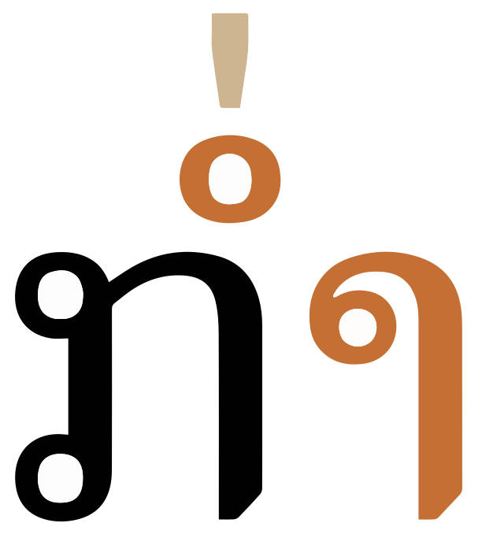
The small circle of the vowel sign AM appears below the tone mark, even though the tone mark precedes the vowel sign in memory.
Letterform slopes, weights, & italics
Observation: Italicised text used for a figure captions, and also for quotations.
Typographic units
Word boundaries
Words are not separated by spaces, nontheless double-clicking or other selection methods are expected to identify word boundaries. There are 2 alternative approaches for managing this.
An application uses a dictionary or smart algorithm to parse the text and determine word boundaries.
The author uses 200B (ZWSP) between words when creating the content.
Unlike Thai or Khmer, it is fairly straightforward to parse individual syllables in Lao, because its alphabetic nature makes it possible to identify syllable-final consonants. Note that syllable-based segmentation must identify and keep together any syllable-initial clusters involving h or l, for example, the initial 2 letters in ຫມາ should wrap as a unit just like the ligated form, ໝາmā.
What about kw etc?
While nearly all syllables can be argued to be words in their own right, there is still a preference for keeping multi-syllabic words together during word-based segmentation. eg. ປະເທດ For this, an application needs to use a dictionary to parse Lao text.
However, widely used software automatically inserts 200B in Lao text at word or syllable boundaries, and many web pages use such inserted ZWSP characters to get browsers to wrap correctly.g3,#issuecomment-385847864
If a dictionary fails to keep two or more syllables together as needed, it should be possible to use the Unicode character 2060 between the two syllables. This is an invisible character, equivalent to a zero-width no-break space, and used to prevent line-breaks.
If dictionaries are used for segmentation, they should be selected based on the language, not the script. (See the list of languages using the Lao script.)
Graphemes
Grapheme clusters
tbd
Unicode grapheme clusters divide text into segments that contain a single base consonant plus any following combining characters: the latter include the 9 combining vowel signs, and all tone marks. Not included are free-standing vowel signs and consonants that make up other parts of a multipart vowel, both pre-base and post-base. Also, syllable-initial consonant clusters with -ວ [U+0EA7 LAO LETTER WO] and ຫ- [U+0EAB LAO LETTER HO SUNG] are treated as 2 text units, but not ຫຼ [U+0EAB LAO LETTER HO SUNG + U+0EBC LAO SEMIVOWEL SIGN LO].
This implies that a pre-base vowel sign such as ເ- [U+0EC0 LAO VOWEL SIGN E] would be treated as a separate item from what follows, and in fact this can be seen in fig_drop_caps_2, where that character is the only thing highlighted in an initial letter selection. (On the other hand, initial letters followed by combining characters select the whole sequence, as seen in fig_drop_caps.)
This means that Lao typography is different from some other SE Asian scripts where pre-base vowel signs are selected with the base because they are combining characters, or syllable-initial consonant clusters form a unit because the 'medial' consonants are represented by combining characters.
Punctuation & inline features
Phrase & section boundaries
,␣;␣:␣.␣?␣!
Lao uses ASCII punctuation, but also uses space as punctuation.
Spaces are used, but represent phrase or sentence boundaries.
Numbers are also normally surrounded by spaces.
In principle, periods are not used, though this appears to be changing.wl,#Punctuation
Observation: Lao Wikipedia uses periods at the end of sentences, and commas (see an example).l An online news site also consistently uses periods to end sentences.
Western punctuation is also used. Contemporary writing may include punctuation marks borrowed from French, such as the exclamation mark (!), and question mark (?). However, questions can be determined by question words within a sentence.wl,#Punctuation
Hyphens are also commonly found in modern writing.wl,#Punctuation
Bracketed text
(␣)
Lao commonly uses ASCII parentheses to insert parenthetical information into text.
Lao texts use quotation marks around quotations. Of course, due to keyboard design, quotations may also be surrounded by ASCII double and single quote marks.
The default quote marks for Lao are “ [U+201C LEFT DOUBLE QUOTATION MARK] at the start, and ” [U+201D RIGHT DOUBLE QUOTATION MARK] at the end.cldr
When an additional quote is embedded within the first, the quote marks are ‘ [U+2018 LEFT SINGLE QUOTATION MARK] and ’ [U+2019 RIGHT SINGLE QUOTATION MARK].cldr
Observation: Lao Wikipedia uses periods after date-related abbreviations,l eg. in ຄ.ສ. 1935 ສະບັບຄົ້ນḵʰ.s. 1935 sab̯äb̯ḵʰo²ṉCE 1935 Edition It is also used in the abbreviated name of the country, eg. ສ.ປ.ປ.ລາວs.p̯.p̯.ḻāw̱Lao PDR
ໆ [U+0EC6 LAO KO LA] is used in ໆລໆkʰɯaŋ-mǎːj-lɛ-ɯːn-ɯːn (ເຄຶ່ອງໝາຍ ແລະອຶ່ນໆ), with a meaning similar to etc. For example, ການສື່ສານ,ສື່ມວນຊົນ,ສື່ໂຄສະນາ...ໆລໆCommunication, media, advertising ... etc
Some sources use ຯລຯ and others ໆລໆ – check this out.
Repetition
ໆ [U+0EC6 LAO KO LA] is used to indicate repetition of a preceding sound.
Other inline features
Other punctuation
CLDR includes the following punctuation.
‐␣‑␣–␣—␣†␣‡␣′␣″
Line & paragraph layout
Line-breaking & hyphenation
Although Lao doesn't use spaces or dividers between words, the expectation is that line-breaks occur at word boundaries. See word for a discussion of issues related to word-based segmentation.
Line-edge rules
As in almost all writing systems, certain punctuation characters should not appear at the end or the start of a line. The Unicode line-break properties help applications decide whether a character should appear at the start or end of a line.
The following list gives examples of typical behaviours for some of the characters used in modern Lao. Context may affect the behaviour of some of these and other characters.
Click/tap on the Lao characters to show what they are.
“ ‘ ( « should not be the last character on a line.
” ’ ) » . , ; ! ? % should not begin a new line.
₭ should be kept with any number, even if separated by a space or parenthesis.
Line breaking should not move a danda or double danda to the beginning of a new line even if they are preceded by a space character.
Text alignment & justification
Since spaces aren't used to separate words, Lao has to use alternative strategies for justification of text.
Baselines, line height, etc.
Lao uses the so-called 'alphabetic' baseline, which is the same as for Latin and many other scripts.
Lao places vowel and tone marks above base characters, one above the other, and can also add combining characters below the line. The complexity of these marks means that the vertical resolution needed for clearly readable Lao text is higher than for English, or most Latin text. In addition, Lao also tends to add more interline spacing than Latin text does.
To give an approximate idea, fig_baselines compares Latin and Lao glyphs from Noto fonts. The basic height of Lao letters is typically slightly above the Latin x-height, however extenders and combining marks reach well beyond the Latin ascenders and descenders, creating a need for larger line spacing.
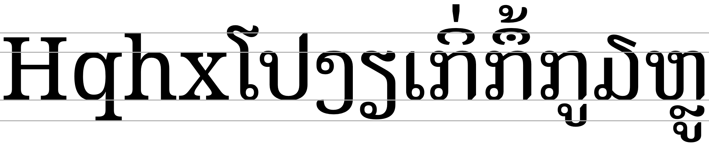
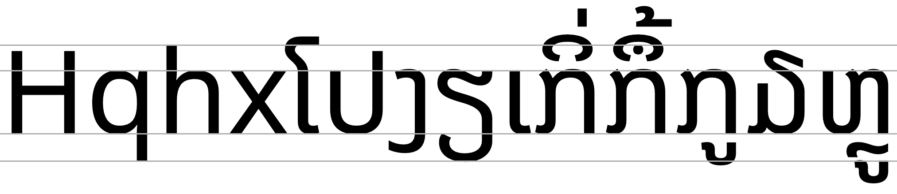
Font metrics for Latin text compared with Lao glyphs in the Noto Serif Lao (top) and Noto Sans Lao (bottom) fonts.
fig_baselines_other shows similar comparisons for the Lao MN and DokChampa fonts.
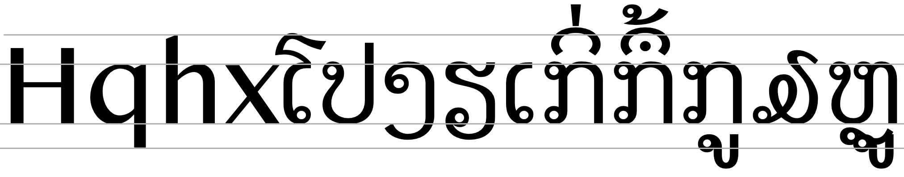
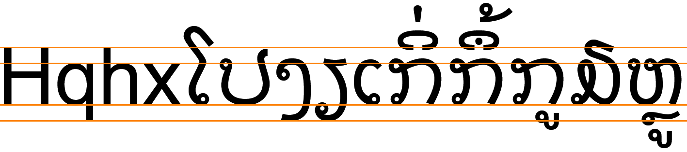
Latin font metrics compared with Lao glyphs in the Lao MN (top) and DokChampa (bottom) fonts.
Counters, lists, etc.
You can experiment with counter styles using the Counter styles converter. Patterns for using these styles in CSS can be found in Ready-made Counter Styles, and we use the names of those patterns here to refer to the various styles.
The modern Lao orthography uses a numeric style.
Numeric
The lao numeric style is decimal-based and uses these digits.rmcs
໐␣໑␣໒␣໓␣໔␣໕␣໖␣໗␣໘␣໙
Examples:
໑␣໒␣໓␣໔␣໑໑␣໒໒␣໓໓␣໔໔␣໑໑໑␣໒໒໒␣໓໓໓␣໔໔໔
Prefixes and suffixes
Observation: Lao Wikipedia uses periods for suffixes.l
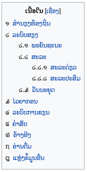
Lao digits being used for section numbering in Wikipedia.
Styling initials
It is possible to find the first letter in a paragraph styled so that it is larger and sits alongside several lines of the continuing paragraph text.
Observation: All combining characters, including spacing ones, are included in the selections shown in fig_drop_caps.
Any punctuation such as opening quotes and opening parentheses should also be included in the initial styling. ?
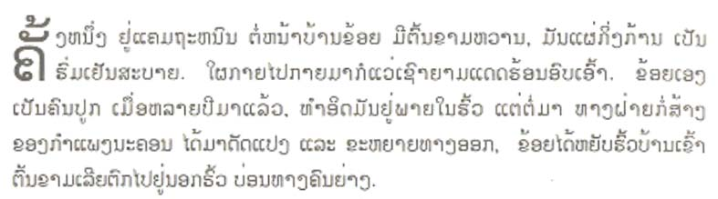
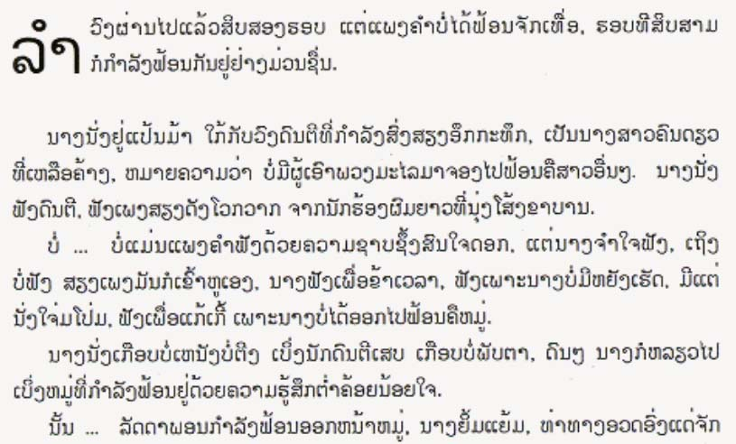
Two example paragraphs showing dropped highlighted initials with combining characters.
Observation: In the figures shown, the alphabetic baseline of the highlighted letter(s) matches the bottom of the row that determines the size of the highlighted letter(s). Selections without diacritics above are somewhat shorter than the height of the lines alongside, whereas selections with multiple diacritics rise slightly higher than the first line of text.
Observation: In fig_drop_caps_2, the selection picks out only ຫ from the digraph ຫລ; and ເ from the syllable ເມຶ່ອ.
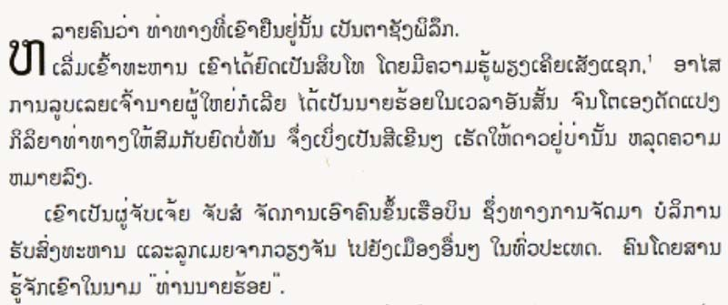
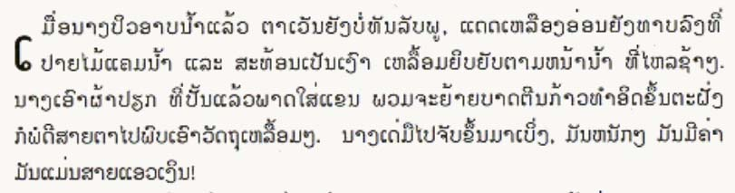
More example paragraphs, showing dropped highlighted initials that are part of a larger construct.
Page & book layout
Notes, footnotes, etc
Observation: Lao Wikipedia uses Lao digits for footnote references.
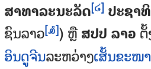
Footnote references in Wikipedia using Lao digits.